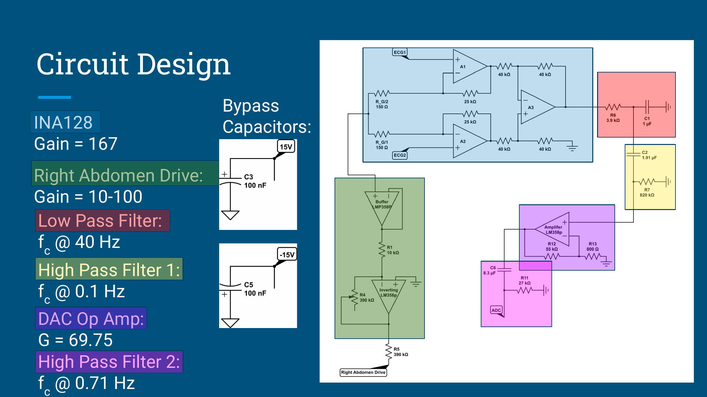
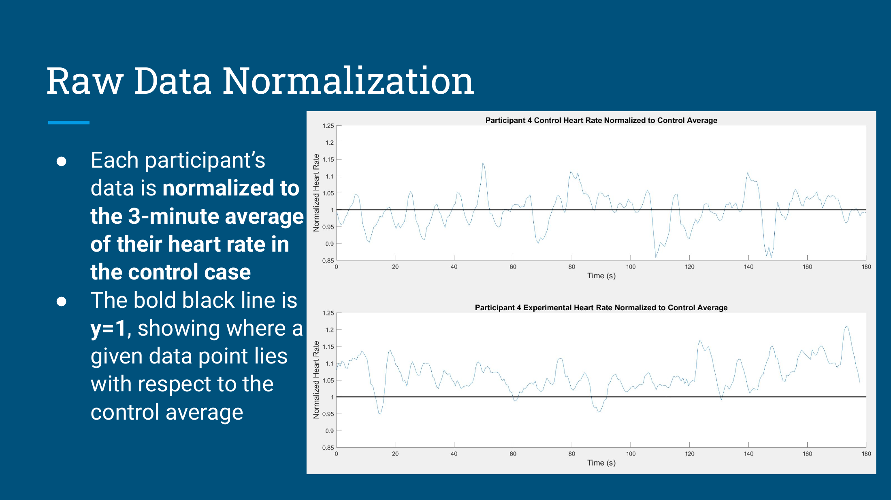
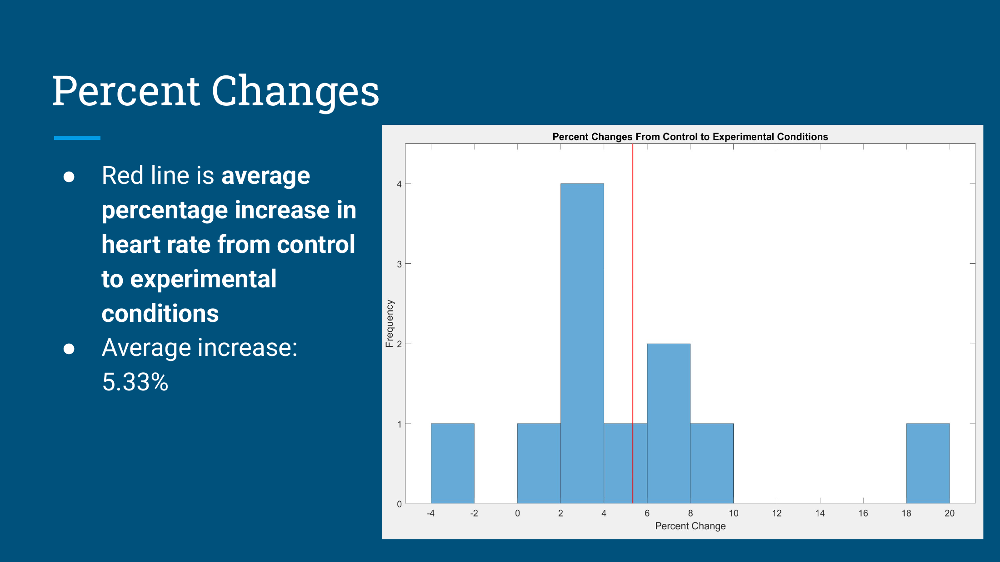
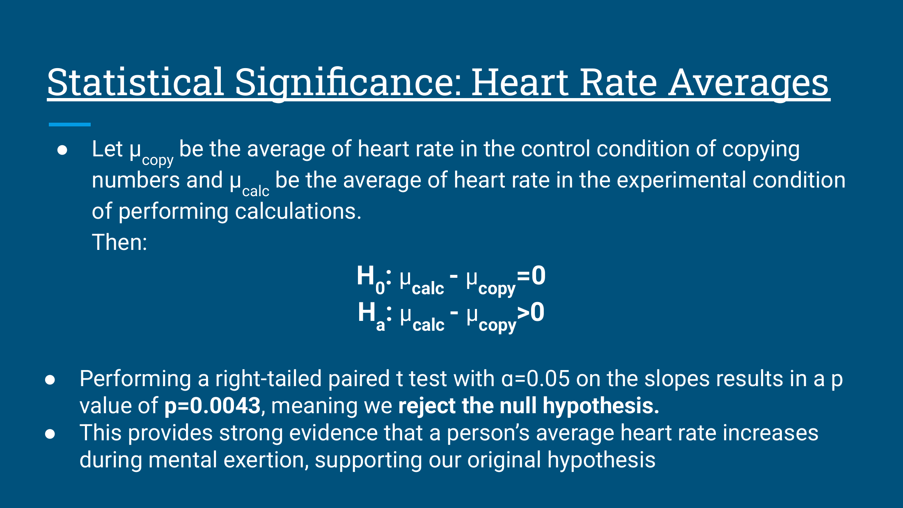

Heart Rate & Mental Exertion
We tested whether mental exertion was associated with a higher average heart rate. Eleven participants completed a number-copying control task and a timed multiplication task while we recorded ECG signals.

Hypothesis and research question
We wanted to answer: does a person’s heart rate increase during mental exertion? Our hypothesis was that heart rate would be higher during periods of mental exertion than during periods without it. To test this, we compared each participant’s heart rate while solving timed multiplication problems with their heart rate while copying numbers as a control.
Experimental design
Each task lasted three minutes. The calculation condition added a visible timer, accuracy scoring, and a possible candy reward. The control condition involved copying numbers without accuracy grading. The experiment therefore compares these task conditions, including their incentives and time pressure.
Circuit and signal processing
We built an ECG circuit using an INA128 instrumentation amplifier, a driven reference electrode, and analog filtering. Most groups used a right leg drive to counteract the noise (like the typical application in Figure 8-16 of the TI INA129 datasheet), but we wanted to try something different and use an abdomen drive instead :) (it worked!) The analysis workflow compared raw and filtered signals, adjusted peak-detection criteria where needed, and checked the resulting heart-rate estimates. Each participant's data was normalized to their average heart rate during the control condition.
Results
The presentation reports an average heart-rate increase of 5.33 percent from control to calculation. A right-tailed paired t-test gave p = 0.0043 at alpha = 0.05. Within this small study, the reported comparison supports a higher average heart rate in the calculation condition; it is not a diagnostic result or proof that mental exertion alone caused the change.
Limitations
The circuit was sensitive to movement and muscle activity for some participants. The time between conditions was not precisely controlled, so carryover effects remain possible. The calculation condition also changed incentives and time pressure alongside the task itself.
My individual contribution
I co-designed the circuit and abdomen-drive setup, wrote all the MATLAB filtering code that converted the ECG recordings into heart-rate output, and presented the filtering walkthrough and circuit slide.
What I would change in the next version
I would make the circuit more robust so the driven-electrode setup could work on the leg as well as the abdomen.
Credits
BME 3030, November–December 2025. Final presentation by Antranig Baghdassarian and Klaus McGinnis.
View the project presentation (PDF) ↗
Right leg drive reference: TI INA129 datasheet, Figure 8-16 (page 25) ↗


